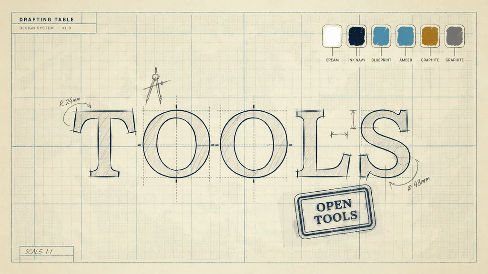
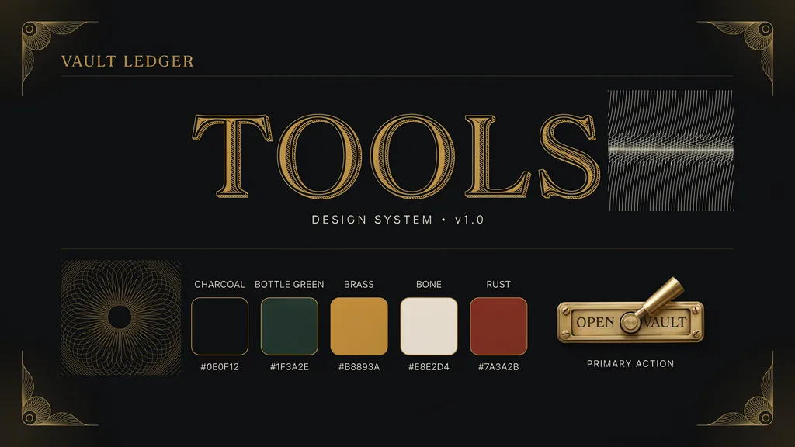
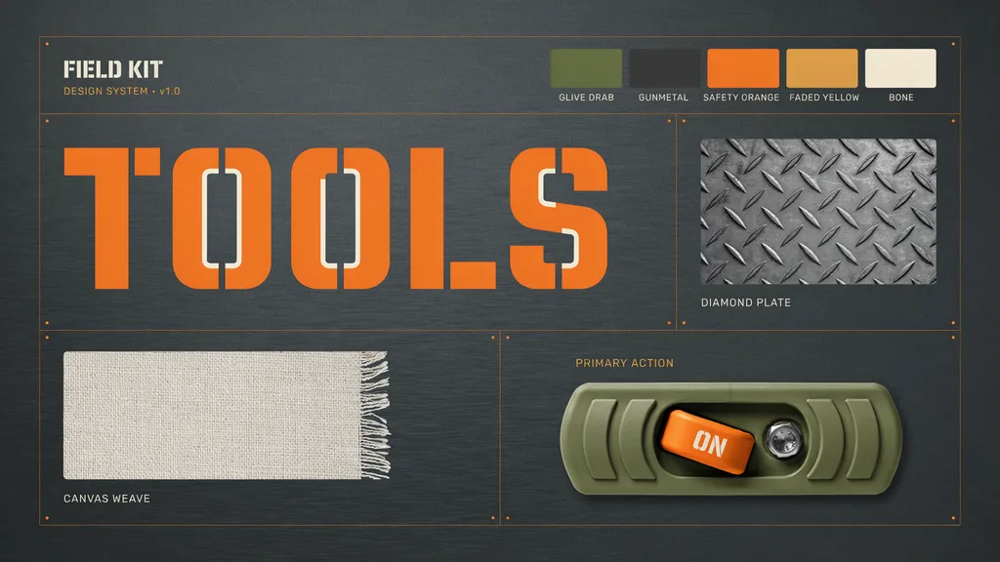

This page renders every token and component live from the app's actual
styles.css and self-hosted fonts — nothing here is a
redrawn mockup. See /DESIGN.md at the repo root for the
full narrative and rationale. Use the toggle above to audit both
palettes; the real app has no such switch and simply follows your
OS's color scheme.
01 Color
Every token, its role, and its live computed value in the current preview scheme. Click a swatch to copy its hex/value.
02 Type
JetBrains Mono (display/technical) + Archivo (body), both self-hosted from app/static/fonts/. Real @font-face declarations, no substitute font.
03 Spacing & radius
4px base spacing scale, and a deliberately crisp radius scale (nothing bubbly — this is a drafted sheet, not a bubble UI).
04 Shadow & motion
Hover or click each card below — the transition it names is the one actually applied, not a description of it.
resting state
hover / lift
toast / deepest
(tile lift)
(Run button press)
(brand underline draw)
05 Components
Real markup and classes from app/templates/ and app/static/styles.css — not redrawn approximations.
Portal tile — default / hover (try it)
Family heading rule
Filter input
Dropzone — click to toggle drag-over state
Option field
Run button — every state (click to simulate a run)
Error text
This file isn't a valid PDF.
Color-swatch result (Color Picker tool)
Toast (click to trigger)
Footer version badge
06 Background & texture
The drafting-grid page backdrop (.aurora) — real CSS gradients, not an image, so it stays crisp at any zoom.
07 Mood boards
Three directions generated for this pass (see DESIGN.md §1 for the full comparison). Drafting Table was chosen for fitting the app's actual purpose — a calm, precise, self-hosted privacy tool — better than the alternatives' heavier/more niche registers.

Drafting Table
Warm cream + blueprint grid, stamp button, hand-drafted lettering. Calm, precise, craft.

Vault Ledger
Charcoal + brass, engraved serif. Reads as banking/security, not everyday tools.

Field Kit
Olive + safety-orange, stencil type. Rugged toolbox — fun, but the stencil face is illegible at UI sizes.
Toast, spinner, and confetti demos aside, this page has no build step — open it directly from app/static/design-system.html, or at /static/design-system.html on a running instance.